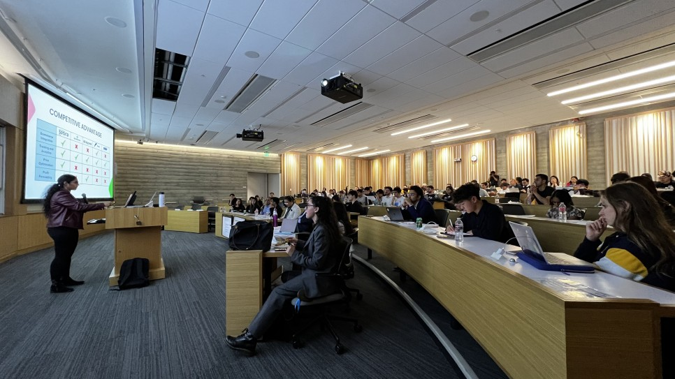

Memory

Erupture Demo Day
이번 콘텐츠는 떠나기 전, 정말 멋지고 친한 친구들의 이야기를 들려주고 싶어서 인터뷰로 기획했다. 특히, entrepreneurship 관련해서 이야기거리가 있는 친구들로 찾았는데, 나는 이런 친구들에게서 에너지를 많이 받았다. Startup Semester에 관심있는 분들이라면, 학교에서 이런 친구들을 많이 찾을 수 있으니, 좋은 친구들 많이 만나시길 바란다.
번역에 대한 고민이 많았는데, 편한 대화를 한 느낌으로 번역했다. 의역이 꽤 많이 들어가있으므로, 정확한 내용은 영어 원문을 확인하면 좋다. (내 말투로 번역한 것 같아서 친구들에겐 조금 미안하다.)
Interview with Valerie

Valerie and I
Valerie는 Erupture로 이어진 모든 인연의 시작 점에 있는 친구다. 처음 이 친구를 만났을 때는 너무 신기했는데, 예전에 스타트업을 하나 끝낸 뒤에 자기 브랜드로 빈티지 란제리 샵을 런칭해서 운영함과 동시에 Erupture를 Yuvia와 같이 만들어서 운영 중이었다.
Decal: Decode Silicon Valley Startup Success 수업 팀 빌딩 과정에서 만났다. 서로 다 팀이 없었고, 팀이 없으면 fail을 받는 다길래 없는 사람들끼리 뭉쳐서 처음에 아이디어 회의를 하곤 했다. Valerie가 성격도 좋고, 이것저것 해온 것도 너무 멋지고, 마침 Erupture의 학기 첫 활동을 개시한다길래 홍보를 조금 도와주고 그랬었다. 그 때부터 친해졌고, 합류해도 되냐 그러니까 ’좋지~’하면서 함께하게 됐다.
집이 멀어서 시간을 더 같이 못 보낸 점이 아쉬운 친구. 태도도 그렇고, 여러모로 옆에서 많이 보고 배울 수 있는 친구였다. 이런 친구 자랑하고 싶어서, 기억하고 싶어서 인터뷰를 부탁했다.

Valerie 수업 도강
Q. 자기소개 해줄래?
Valerie: 안녕, 내 이름은 Valerie고, 나는 지금 버클리 4학년이야. 나는 Haas School of Business에서 business 공부하고 있고, 이번 5월에 졸업해. 이거 말고는, 나는 지금 Femina라고 불리는 지속가능한 란제리 회사를 운영하고 있고, 버클리에 소외된 창업자들을 도와주는 엑셀러레이터인 Erupture Angel Network의 co-founder야.

Valerie, Yuvia TikTok 촬영 도와준 날
Q. 기업가정신에 관심가지게 된 계기는?
Valerie: 내 생각에 커뮤니티 칼리지에 있을 때였던 것 같은데, 그 때 쓰리잡 뛰느라 너무 힘들었거든. 나는 좀 더 똑똑하게 돈 벌고 싶었어. 아마 그 때가 내가 사업을 시작한 시점이 아닌가 싶어. 나는 내가 좋아하는 걸 하고 싶었거든, 단순 서비스 말고. 이게 내가 비즈니스를 하게 된 계기야. 그리고 계속하게 된 이유는 내가 버클리 왔을 때 인턴쉽을 하나도 못 잡아서이기도 했는데, ’그래 내가 내 인턴쉽 만들지’라는 생각이었던 거 같아. 그래 뭐, 잘 모르겠지만 나는 이게 더 좋은 경험이라고 생각해. 그리고 이게 어디 큰 회사에서 인턴쉽 하는 거보다 더 가치있을 수도 있다고도 생각해. 왜냐하면 나 스스로 일에 대한 추진력이나 동기가 있어야되는데, 그건 누가 시키는 거 하는 거보다 어려운 일이거든.
Siyun: 이런 거 언제부터 했어?
Valerie: 초등학교 5학년 때 헤어 악세사리 팔기도 했고, 내가 직접 다 만들어서. 그리고 또 덕테이프 지갑도 만들었었고, 고등학교 때. 장신구도 만들었어. 그런 거 다 학교에 팔았지. 내 생각에 그 때가 시작이지 않았나 싶어.

Valerie랑 먹은 서울핫도그
Q. 요즘은 뭐에 관심있어, 아니면 뭐 하고 있어?
Valerie: 나는 지난학기에는 주로 Erupture 일을 많이 했어. 버클리에서 처음부터 다 해야 하는 상황이어서, 같이 창업한 친구랑 내가 한 번도 해본 적 없는 일을 했지. 지금은 풀타임 자리 찾고 있어. 그게 내가 요즘 하고 있는 일. 여기저기 네트워크 넓히고, 원서 넣고, 레퍼럴 받으려고 하고 있어. 지난 몇 달 동안 인터뷰 프로세스 많이 거쳤어.

Erupture First Meeting! Yuvia를 처음 만난 날이기도 하다.
Q. 인생 목표는 뭐야?
Valerie: 난 평생 일하진 않을 것 같아. 내 인생 가장 큰 목표는 45살이 되기 전에 은퇴하는 건데, 인생에는 바쁘게 일하는 거보다 더 많은게 있다고 생각하기 때문이야. 다른 목표로는 여행. 난 이게 내 인생에서 제일 재미있는 부분이라고 생각해. 그리고 아마 더 큰 회사를 세울 수도 있지 않을까. 스타트업으로서 가질 수 있는 큰 꿈이지.
Siyun: 그거 고생하는거 같은데.
Valerie: ㅎㅎ 45살 전에 회사 차려야지.

오늘 같이 먹은 한식
Q. UC Berkeley에 교환학생 오면 해봐야 할 것들 추천 해줘.
Valerie: 활동 같은 거?
Siyun: 활동이든 경험이든 뭐든.
Valerie: 내 생각에 여기 있는 동안 최대한 많은 사람을 만나려고 노력하는게 좋을 것 같아. 왜냐하면 내 생각에도 나는 버클리 학생이지만, 처음에 사람 많이 만나려고 하지 않았던 것 같거든. 그런데 마지막 학기에 좋은 사람들을 너무 많이 만났어. 그냥 내가 그래서, 사람 많이 만나봤으면 좋겠다고 하는 거야. 수업 같이 듣는 사람들이랑 대화해보고, 그냥 아무 사람한테나 말 걸어보고 그래 봤으면 좋겠어. 여기 있는 사람들 보기보다 다가가기 쉽거든.
음, 그리고 활동 관련해서는, 여기서는 항상 뭔가가 일어나거든, 가능한 한 캠퍼스에 있으려고 노력하면 좋을 것 같아. 아무튼 계획 없으면 일단 버클리에라도 머무르고 있으면 뭐라도 찾을 수 있어. 여기는 항상 어떤 일이 일어나고 있거든.
제너럴하게는, 클럽에 가입하는 거. 사람 만나는 제일 좋은 방법이라고 생각해. 그리고 Decal 수업 듣기. 제일 재밌는 수업 중에 하나인데, 학생들이 가르치고 진짜 듣기 편하거든. 나는 Decal 수업에서 좋은 사람들 많이 만났어.
그리고 여긴 날씨도 좋고, 음식도 맛있어서 피크닉 자주 나가는거 추천해. 그리고 피크닉은 돈 많이 안 들어.
Interview with Yuvia

Yuvia and I
Yuvia는 정말 친한 친구라고 말 할 수 있는데, 같이 시간을 가장 많이 보냈다. Erupture 활동도 그렇고, Yuvia가 frat party bid도 얻어주고, Berkeley 근처의 Walnut Creek에 있는 양조장에서 맥주를 같이 마시기도 했다. 밥도 자주 같이 먹었고, 서로 커피 사주고 공부하고, 이것저것 이야기하고 그랬었다. 글 쓰는 지금도 같이 공부하고 있다.
고마우면서도 이번에 졸업하는 친구라 이렇게 또 시간선이 어긋나는게 많이 아쉽긴 하다. 기억하고 싶어서, 이런 친구 있다는거 자랑하고 싶어서 인터뷰를 부탁했다.

Cal Day, Yuvia와 함께 Party tour
Q. 자기소개 해줄래?
Yuvia: 안녕, 이름은 Yuvia고, 지금 UC Berkeley Haas School of Business에서 Business 전공하고 있어. 기업가 정신이랑 벤처 캐피탈에 관심이 많고, 내가 가고 싶으니까. 취미는, 포커 게임 좋아하고, 애니메이션 보는거 좋아해.

Yuvia와 자주 간 South Hall
Q. 기업가 정신에 관심가지게 된 계기는?
Yuvia: 돈 많이 벌고 싶어서? 미안, 농담.
Siyun: 아니, 진심인거 같은데? ㅋㅋ
Yuvia: 일단, 나는 내가 원하는 걸 할 수 있다는게 맘에 들어. 그래서 좋아해. 그리고 꽤 재밌고, 진짜 빠르고. 대부분의 사람들은 이런 부분에서 스트레스 받는데, 나는 그런 상황을 좋아해. 잘 모르겠는데, 내 성격이지 않을까. 그리고 투자받고 내가 원하는 무언가를 하는거, 꽤 멋진 거 같아.
학교에서 ‘Tech Entrepreneurship’이라는 수업을 들었는데, 그 때 처음으로 투자자를 만나고, 투자라는게 어떻게 진행되는지, 투자 받는 것이 얼마나 쉬운지 알았어. ‘오 진짜 투자 받을 수 있네?’ 이런 느낌?
Siyun: 그럼 그건 벤처 투자 관련된 거?
Yuvia: 어느 정도는. 전에는 사업을 하려면 하기 싫은 일 해서 내가 돈 전부 모아서 다 해야 하는 줄 알았거든. 그 당시엔 일단 돈이 없었으니까, 사업을 한다거나 하는 일이 벌어지지 않았는데. 아무튼 투자라는 걸 받을 수 있다는 걸 알고 나서는 ’오 꽤 멋진데’라고 생각했어. 다른 일 할 필요 없이 바로 사업을 시작할 수 있으니까.

Erupture Tabling with Yuvia
Q. 요즘은 뭐에 관심있어, 아니면 뭐 하고 있어?
Yuvia: 나는 새로운 걸 좋아해서, 여기저기 관심이 많은 편이야. 지금은 내가 시작한 클럽인 Erupture 운영하고 있지. 우리는 일단 투자자랑 창업자들을 연결해주고, 창업자들이 ’아 나도 투자 받을 수 있구나’와 같은 ’아하 moment’를 주려고 노력하지. 그게 일단은 목표이긴 한데, 네트워킹 커뮤니티이기도 해. 사람들 모여서 이것저것 주고받고 하는 것들. 일단은 이걸 하고 있지.
그리고 너도 알다시피, 이제 나 졸업하잖아? 취직하려고 노력 중이지. 아직은 내가 진짜 파보고 싶은 루트를 정하진 못했는데, 궁극적으로는 창업을 하고 싶어. 근데, 그 전에 다른 기술을 좀 배우고 싶다는 생각도 들고 그래. 이미 펀딩 받은 친구 스타트업에 합류하는 방법도 있고, 지금 수업에서 꾸린 팀이랑 창업하는 방법도 있는데, 몇 가지 좀 신경써야 할게 있지. 친구 스타트업에 합류하면 나는 그저 팀원이고, 창업 멤버가 아니지. 그리고 친구 스타트업에 정말 내가 필요한지 잘 모르겠어. 나는 마케팅을 잘하는데, 그 친구들은 마케팅 오퍼레이션 같은 걸 하고 있을 것 같거든? 그건 내가 하는 마케팅이라는 조금 달라서. 그리고 수업에서 만난 팀원들은 진짜 창업 하고 싶은지 잘 모르겠고. 이게 스타트업 시작하는게 어려운 이유이기도 한데, 팀 찾기가 정말 어려워. 이거 말고는 또 벤처 캐피탈에 취직하는 거. Erupture 활동 하면서 그 쪽 필드에 네트워크가 꽤 생겨서 인터뷰도 몇 개 봤어. 근데 또 나는 tech 쪽에도 관심있고, 아무튼 나는 여기저기 관심이 많아.

Yuvia와 먹은 야식
Q. 인생 목표는 뭐야?
Yuvia: 억만장자
Siyun: 억만장자 된 다음에 뭐 할 건데?
Yuvia: 세계 기아문제를 해결하려고. 아마 억만장자가 되면 난 아마 그 문제를 하고 싶을거야. 세상에 식량이 이렇게 많은데도 기아 문제가 있다는게 말이 안돼. 우리가 식량을 너무 많이 생산하고 있는데도 공평하게 분배가 안 된다는 이야기잖아. 과하게 생산한 부분들이 버려질거고, 과잉생산하기 때문에 좋은 토양을 소비 해버려서, 아이러니하게도 미래에는 충분히 식량을 생산하지 못하게 될거란 말이지. 아무튼 이렇게 농업쪽에 이런 문제가 있어. 근데 이런 문제를 해결하려면 돈이 정말 많아야되고, 그래서 억만장자가 되고 싶지.
Siyun: 농업이나 식량 문제에 관심을 갖게 된 계기는?
Yuvia: 사실은 들어야 하는 수업 때문이었는데, 듣기 전에는 진짜 지루할거 같다고 생각했었어.
Siyun: 무슨 수업이었는데?
Yuvia: 미국 학생들이 무조건 들어야 되는 미국 문화 수업 중에 하나였는데, 이름은 ‘Political, Sociological, and Environmental Effects of Agricultural Food Systems.’ 이름만 들어보면 식물 키우고 그런 이야기 할 거 같잖아. 근데 그런게 아니라 농업 시스템이나, 식품이 어떻게 농장에서 우리 식탁까지 올 수 있는지, 농업 법률 같은 내용들 배웠고, 꽤 재밌었어. 살충제가 우리 몸에 어떤 영향을 미치는지 배웠는데, 음식이랑 살충제를 같이 먹으면 암에 걸릴 확률이 70% 높아지고, 실제는 훨씬 더 높다고 해. 그리고 살충제를 뿌리면 살충제가 공기 중에 떠다니게 되는데, 그걸 들이 마시면 암에 걸릴 확률이 더 높아져. 아무튼 세상에 내가 모르는 문제가 너무 많고, 전혀 몰랐던 농업 쪽의 문제였는데 알게 됐고, 수업도 내가 싫어할 것 같았는데 괜찮았어. 지금은 나는 그 수업 듣는 거 확실히 추천해.

Valerie가 추천해줘서 Yuvia와 가게 된 Walnut Creek 양조장
Q. UC Berkeley에 교환학생을 오면 해봐야 할 것들 추천 해줘.
Yuvia: 만약 여기 한 학기만 있는거면, 좀 어렵긴 해. 그래도 일단 나는 봄 학기에 오는걸 추천해. 봄에 할게 많아.
일단 내가 추천하고 싶은건 축제를 포함해서 여기서 할 수 있는 모든 걸 다해보는 것. 우리 얼마 전에 Cal Day 있었지, 그리고 이번 주 금요일에 Senior Bar Crawl 있지. 학교에서만 열리는 축제가 많은데, 대학교 말고는 어디서도 못하는 것들이라 해보면 재밌을거야. 그리고 나도 이제 4학년이니까 마지막이지.
그리고 추천하고 싶은건 학교 클럽에 가입하는거. 직업 구하는데 그렇게 중요하진 않은 것 같은데, 학교에서 같이 어울릴 수 있는 커뮤니티가 생기는건 좋은 거 같아. 나는 버클리 처음 왔을 때 학교 클럽 가입 안 했거든, 그런데 내 친구들이 그렇게 인기가 많은 줄 몰랐지. 다들 가끔 바빠서 못 만나고 그래서 혼자 공부하고 그랬는데, 지금은 클럽이 있지.
난 캠퍼스 돌아다니면 항상 아는 사람들을 만나. 이건 꽤 좋은 것 같아. 친구 있으면 좋은 점은 숙제할 때 친구한테 도움을 받는다거나, 교수님한테 조언 구할 때나, 시험 족보 공유 같은게 있지. 난 처음 버클리 왔을 때 전혀 몰랐는데, 다들 족보로 공부하고 있더라고. 나만 족보가 없다는걸 그 때 알았어. 수업 자료로만 공부하고 그래서 되게 손해를 많이 봤지. 아무튼 여기 오면 그냥 친구를 많이 사귀는 걸 추천해. 어떤 방식으로든 뭔가 해보는 게 중요한 거 같아.
Interview with Khaled

Khaled and I
Khaled랑은 만난지는 꽤 됐지만, 교류가 있진 않았고, Eruptrue 합류 이후 빠르게 친해졌다. 허슬링하는 모습들에서 서로 동질감을 느꼈을 수도 있고, 친구가 워낙 붙임성이 좋아서 행사 한 번, 술 한 잔 기울인 것에 바로 친해졌을지도 모르겠다.
Khaled는 굉장히 매력적인 친구다. Demo Day sponsor를 사실상 이 친구가 전부 따내왔는데, 대략 $1000 규모였다. 끝나고 뒤풀이에서 대체 어떻게 했냐 그러니까 ‘나 세일즈 5년 했다니까’ 이러면서 능청을 먼저 떨더니,
Be confident and reveal your vulnerability. Then, you can sell anything.
같이 다른 친구 집에 잠깐 들릴 때, 오래된 엘리베이터를 타고 내가 ‘아 나 이런거 너무 좋아’ 이랬더니 웃으면서 ‘I love that guy.’ 이런 moment도 있었다. 반응이 좋아 이 친구.
아무튼 이런 매력을 가진 친구였고, 인터뷰도 흔쾌히 okay 해줬다.

Demo Day 당일 UC Berkeley campus
Q. 자기소개 해줄래?
Khaled: 내 이름은 Khaled Alameldin이고, K Develops라는 스타트업을 경영하고 있는 창업가고, 그리고 지난 5년간 쭉 telecommunication 세일즈를 하고 있어. 대면, 콜드 콜, 모든 종류의 세일즈는 다 하고 있어.
Siyun: 전공은 뭐야?
Khaled: 내 전공은 political economy고, 기술이랑 경제에 초점이 맞춰져있는 전공이야.

Erupture Semester Roadmap
Q. 기업가 정신에 관심을 가지게 된 계기는?
Khaled: 솔직히, 나는 꽤 어릴 때 부터 기업가 정신에 관심이 있었는데, 내가 기억하는 처음은 이집트에서 온 할머니가 쿠키를 만들고 싶어하셨거든. 초등학교 2학년 때, 할머니한테 쿠키를 구워달라 그랬고, 할머니는 몰랐지만 나는 동네 여기저기 돌아다니면서 쿠키를 팔았지. 한 40달러 정도 순수익이 났던 것 같아. 그 이후로 기업가 정신에 관심이 생겼고, 지금도 항상 기업가를 꿈꾸고 있지.

Khaled interview 당일 campus
Q. 지금은 뭐에 관심있고, 뭐 하고 있어?
Khaled: 지금? 지금은 스타트업에서 일하고 있어. 데이팅 프로필을 최적화해서 데이트 약속 잡는 걸 도와주는 스타트업에서 일하고 있고, Kyle White라고 남부 캘리포니아에서 만난 사람이랑 같이 하고 있어. 내가 전 직장에서 회계 일 할 때 만났어. 지금은 또 다른 프로젝트도 같이 하고 있는데, 내 회사인 K Develops에서 프리랜서 컨설팅을 하고 있고, 비즈니스 오너들이 인플루언서 마케팅 전략을 개발할 수 있도록 도와주고 있어. 시간 당으로 돈을 벌고 있고, 이게 두 번째 스타트업.

Cal Day
Q. 인생 목표는 뭐야?
Khaled: 내 인생 목표는 기업가들을 돕는 것. Tech 쪽은 솔직히 아직까지 백인들의 전유물이고, 업계에 유색인종이 많이 없어. 그래서 나는 그런 사람들이 tech 업계에 더 진입할 수 있도록 돕고 싶어. 그래서 매일 나를 깨우게 만드는 추진력이자 목표는 그런 격차를 좁히는 것. 내 마지막 회사는 모든 리더십 포지션이 백인이었고, 그 밑에서 POC (People of Color) 사람들이 일 하고 있었는데, 그런 격차를 없애버리고 싶어. 너도 알다시피, 내가 회사를 차리고, 그런 자본으로 또 계속 돈을 벌다보면 언젠가 벤처 캐피탈도 할 수 있을거야. 그러고 나서 POC 회사에 투자하는 게 목표.

Cal Day
Q. UC Berkeley에 교환학생 오면 해야 하는거 추천한다면?
Khaled: 이 질문 중요하지. 교환학생으로 온다는 건 다른 미국인들은 모르는 다른 문화, 환경, 생활 방식을 알고 있다는 뜻이라서, 이건 굉장히 좋은 거 같아. 대부분의 미국인들은 솔직히 여행도 안하고 그래. 그래서 내가 하고 싶은 말은, 미국 네트워크를 활용하라는 거. tech나 finance나 어느 분야를 가든지 간에 네트워크를 형성한 사람들, 내가 만나는 사람들, 내가 연결해주는 사람들, 이런 저런 행사를 가서 만난 사람들이 대학 학위보다 더 많은 가치가 있을거야. 내 말은, 교육도 정말 좋은데, 네트워킹이 더 중요한거 같아. 네트워킹을 통해서 더 큰 역할, 더 중요한 역할을 맡을 수 있어. 언젠가 미국에 있는 누군가랑 함께 어디서든 비즈니스를 할 수도 있지. 누가 알아, 누군가 제품을 들고 나타날지도, 누군가 돈을 들고 나타날지도. 그리고 내가 그 사람들은 없는 네트워크가 있고 그 사람들을 연결시켜 줄 수 있다면? 그러면 돈을 벌 수 있겠지.

Interview 거절 한 친구와 다녀온 SF MOMA
신기하게도 인터뷰 한 친구 세 명 모두 친구를 많이 만나라는 이야기를 했다. 도착 3일 째에 캠퍼스에 지나가던 random person에게 악수 건내며 용기내 인사했던 기억이 좋은 시작이었을까, 어디서든 사람 만나는 곳에선 피곤해도 일단 새로운 얼굴이 보이면 다가가서 이름 물어보고 인사부터 했던 것 같다. (그리고 내가 얼굴을 잘 기억한다. 도움이 많이 됐다.) 학기 말에는 네트워킹 피로도가 누적되서, 수동적으로 임하기도 했는데, 이미 만난 친구들과 시간을 함께 보내다 보니, 떠나기 2주 전에 알게 된 친구랑도 깊은 이야기를 나누며 친해질 수 있었다.

PEOPLE FIRST, TASKS SECOND
어느 순간 교환학생 학기를 돌아보니, 정말 많은 사람을 만난 한 학기였다. 학기 초에 얼추 천 명 만나면 두 명 정도 남지 않을까라는 생각을 했었는데, 천 명도 만나지 않았는데 친구를 많이 남긴 것 같다. 떠나는 이의 발걸음은 가볍다지만, 마음을 추스리고 이별을 받아들이는 데 시간이 좀 걸리지 않을까 싶다. 모두들 건강하고, 원하는 삶, 행복한 삶 살다가 또 보면 좋겠다. 교환학생 오는 많은 분들도, 수학 기간 동안 인생에 오래 남을 친구들을 만나시면 좋겠다.
English Interview Scripts
Interview with Valerie
Q. Could you introduce yourself?
Valerie: Hi, my name is Valerie, and I’m currently a senior at Berkeley. I’m studying business at Hass School of Business, and I’m gonna be graduating this May. Outside of that, I run a sustainable lingerie company called Femina. I’m also the co-founder of Erupture Angel Network, which is an accelerator for minority Founders at Berkeley. Yeah, that’s pretty much me.
Q. What did make you get into entrepreneurship?
Valerie: I think in Community College. I was really tired of working three jobs. I wanted to find a way like a smarter way of making money. So that’s when I kind of started my business. I also wanted to do something that I actually enjoyed and was passionate about, not just work like some service job. So that’s like how I started my company. And I think the reason why I continued it when I came to Berkeley was that I couldn’t get any internships. I was like, ‘okay, I’ll make my own internship.’ So I think that’s. Yeah, I don’t know. I just kind of like I think it’s a really good experience, and I think it’s sometimes a lot more valuable than interning at some bigger company because it forces you to create your own drive and motivation for things. And that’s a lot harder than just doing what someone says.
Siyun: What was the beginning of your entrepreneurship?
Valerie: I sold hair accessories, and in like fifth grade as I made them from scratch, and then I also made duct tape wallets, and then in high school, I made jewelry. I used to sell that at school, too. So I guess I was like the start.
Q. What are you currently looking for or working on?
Valerie: I’ve mainly been like this last semester. I was working on Erupture a lot because we’re building a team from scratch at Berkeley. So that was kind of like a new challenge because it was something that my co-founder and I had never done before, so that was like kind of the biggest project I worked on but right now. I’m currently working on trying to look for a full-time job. So that’s kind of been like All that I’ve been doing recently. I’ve just been like trying to network a lot and apply to places and get referrals, and so I’ve just been like going through the interview process the past couple of months.
Q. What is your life goal?
Valerie: Probably not to work my whole life. One of my biggest goals is to retire before I’m 45. Because I think there’s a lot more to life than hustling and working. So, yeah. I guess outside of that, I think traveling is also a big goal for me. I want to continue to keep traveling a lot and exploring places because I think that’s one of the most exciting aspects of my life. Maybe start a company like a larger-scale company. I think that’s also a big goal of mine as a startup.
Siyun: It’s kind of hustling.
Valerie: Yeah, haha. Hopefully, I’ll start the company before I’m 45.
Q. What do you recommend to do for exchange students at UC Berkeley?
Valerie: In terms of activities?
Siyun: Activities or experience, whatever.
Valerie: I think like just try to meet as many people as you can while you’re here because I think even as a native student, I didn’t put myself out there to new people very much in the beginning, and I regret that a lot because I think that like I met some of the coolest people my last semester of college. I think it’s just because I was like… I don’t know. More willing to meet people. So I think definitely just try to talk to people in your classes and approach random people. I think people are a lot more approachable than they seem here.
Um, and, in terms of like activities, I think, just try to be on campus as much as you can because I feel like there’s always something going on. So even if you don’t have plans, you’ll probably find something to do or just in the general Berkeley area, too. I feel like there’s always something going on.
In general, join some clubs. That’s probably a really good way to meet people. Take Decals. Decals are some of the most fun classes, and they’re taught by students, and they’re so laid back, and I have met so many random cool people and decals, too.
And have a lot of picnics outside because the weather is nice here, and the food is good here. So that’s always a cheap activity.
Interview with Yuvia
Q. Could you introduce yourself?
Yuvia: Hi, my name is Yuvia, and I’m studying Business at Haas School of Business at UC Berkeley. I’m interested in entrepreneurship, and venture capital, the field I want to go into. I like to play poker, and I like to watch Anime.
Q. What did make you get into entrepreneurship?
Yuvia: I was interested in entrepreneurship because I want to make a lot of money. Just kidding.
Siyun: No, you said the truth.
Yuvia: I like it because you have the anatomy to do what you want. And it’s pretty fun. It’s really fast-paced. A lot of people think it’s stressful, but I like to be under that stress. I don’t know. That’s just my personality. And I think it’s pretty cool how you can get investment and just start whatever you want. So that’s kind of how I guess I started getting interested in it.
When I took a class here at Berkeley that was called ‘Tech Entrepreneurship,’ and then that class that’s when I first got exposed to investors, like how things work and how you can get investment really easily. So then when I realize, ‘Oh, wow, I can actually get investment like oh cool.’
Siyun: Was it about venture investing?
Yuvia: Kind of. I mean because before that, I thought that when you started a business, you have to save up all this money and like do it out of your own thing, you know. But at this point in time, I didn’t have any money, so that wasn’t gonna happen. So yeah, once I found out, you can get investment. I was ‘oh nice.’ I don’t have to like doing other stuff. I can just jump right into it.
Q. What are you currently looking for or working on?
Yuvia: I’m kind of all over the place because I like to try new things. So, the main thing I’m doing is running Erupture, which is the club that I started. So basically, we try to connect entrepreneurs with investors. So they can get that ‘Aha moment’ of like, ‘Oh, wow, I can get investment.’ That’s kind of our goal, but it’s mostly like a networking Community where people just get together and share resources. So I do that.
Also, obviously, I’m graduating. So I’m trying to get a job. I’m kind of undecided about the route I really want to go down, whether or not I want to do it. What I really want to do ultimately is just want to start a business, but I also feel like I want to get some other skills before I do that. I have a couple opportunities to start a business right now, like I could join my friends’ startup, which already has funding, or I could start my own startup with my team from my startup class that I’m doing right now.
But there are a couple issues with that. The one if I join my friend’s startup, I’m kind of just a team member. I’m not like a founding team member, you know. And I’m also not sure if they really need my skills. They’re going a different route. Because I’m like better at marketing and they’re kind of doing more other things like marketing Ops, which is a little bit different than what I do.
And then for my own one for my class, I don’t know if the people in that team are really dedicated to it. That’s kind of the hard part of starting a startup. It’s hard to really like finding a team. And then other than that, I might just go into VC because, through my club, I have a lot of connections in that field. So I have quite a few interviews for that, but then I’m also interested in Tech. So I’m kind of all over the place.
Q. What is your life goal?
Yuvia: Life’s goal is to be a billionaire.
Siyun: After becoming a billionaire, what will you do?
Yuvia: I would try to use my money to end world hunger. That’s probably my goal. That’s probably my goal because it’s a little bit ridiculous that we have world hunger when we actually have way too much food for people. And the other thing is we’re producing so much food, but it’s not being distributed equitably. So a lot of it’s just going to waste even though we’ve produced it. And, since we’re having to overproduce so much food, we’re actually using up all the good soil. That’s also gonna lead us to not having food in the future. It’s like a really big mess in the agriculture industry. So yeah, but you know, you have to have a lot of money to solve that. So that’s why I want to be a billionaire.
Siyun: Why did you get interested in agriculture and the food problem.
Yuvia: I actually was forced to take a class here. It was like, ‘Oh my God, this is gonna be so boring.’
Siyun: What was the class?
Yuvia: It’s for the American culture requirement, which is a requirement for US students. The full name is ‘Political, Sociological, and Environmental Effects of Agricultural Food Systems.’ So it’s not really they do talk a lot about how to grow plants and stuff. But that’s not exactly like the class. The class is more like laws surrounding agriculture, like how the agriculture system works, how the food gets from the farmer to your table and the problems in the system. So it’s pretty interesting. We learned a lot about pesticides and how they can actually affect them. Eating foods with pesticides has a 70% higher chance of getting cancer. It’s actually a lot higher. Also, one thing I learned is if you live near a farm, you also have a way higher chance of getting cancer due to pesticide drift which is pesticides just floating through the air. There’re so many problems that I didn’t even realize. Yeah, lots of problems in that industry, but it was a really interesting class. Actually, I thought I would hate it, but it was pretty good. I definitely recommend it.
Q. What do you recommend to do for exchange students at UC Berkeley?
Yuvia: If you’re only going to be here for a semester, it’s kind of hard. A lot of stuff is in the spring semester. I’d recommend coming in spring because we have way more stuff, I guess.
What I would recommend is just to try to do everything that you can while you’re here, like the festivals, and we just had Cal Day, and we had a senior Bar Crawl coming Friday. There are a lot of different festivals just that the school throws. I think those are fun to try for once because they don’t happen anywhere else other than in college. So it’s kind of your last chance in a way, at least for me. It feels like my last chance because I’m a senior.
And also I would say just join a club. I wouldn’t think clubs are that important for getting a job, but it’s just like nice to have a community on campus that you can hang out with. I didn’t join a club when I first came to Berkeley, and I didn’t really know that many people like my close friends, but then sometimes they were busy. So then I just ended up studying alone on campus, but now they have a club.
I always see people randomly around campus that I know, and that’s kind of nice. Also, it’s really good to have friends because they can help you with homework when you’re stuck or they can give you advice from professors, or they can send you their past exams that you can study. That is really important. I didn’t know when I first started, so I didn’t realize when I first came to Berkeley that everyone who was using past exams to study and I was not. I was just studying the materials given by the professor. So I was at a really big disadvantage. So yeah, I think just making a lot of friends. It’s important so that you can learn how to break through the system in a way.
Interview with Khaled
Q. Could you introduce yourself?
Khaled: My name is Khaled Alameldin. I am an entrepreneur owned a company called ‘K Develops,’ and I’ve been in sales for the last five years, taking into telecommunications as well. In-person, cold calling all forms of sales.
Siyun: What’s your major?
Khaled: My major is a political economy with a focus on Tech and the economy.
Q. What did you get into entrepreneurship?
Khaled: Honestly, I got into entrepreneurship at a pretty early age. I feel like the first entrepreneurial journey I could really recall is my grandma came down from Egypt, and she wanted to make cookies. So, I asked her to make cookies, and I was in second grade. She didn’t know I was gonna do this, but she made the cookies, and I went around the block, and I sold them. And then I made about 40 dollars of net profit. So yeah, that’s what got me started in entrepreneurship ever since then. I’ve always wanted to be an entrepreneur.
Q. What are you currently looking for or working on?
Khaled: Right now? I’m working on a couple different startups. I’m working on one startup specifically to help people essentially optimize their dating profiles as well as help them book dates for them. And that’s what my partner down in Southern California, Kyle white, whom I met through the last job that I had as an account executive, and I’m working on a couple other side projects right now. I also still do freelance consulting with my company, K develops. I help business entrepreneurs essentially develop an influencer marketing strategy, and then I charge an hourly rate on that. So that would be the second aspect.
Q. What is your life goal?
Khaled: My life goal is to help entrepreneurs, help myself break into Tech because Tech is honestly still a white man’s game, and there are not a lot of people of color in the industry. So my goal, my initiative, and my drive, which wakes me up every day, is to help bridge that gap. The last company I worked out had all white leadership and all POC people working at the bottom. I want to help eliminate that by meditating on those gaps by, you know, starting my own company as well as in maybe one day get into even Venture Capital if I recur enough like capital making up money. That would be the main goal of other POC entrepreneurs investing in their businesses.
Q. What do you recommend to do for exchange students at UC Berkeley?
Khaled: 100%. So if you’re coming in as an exchange student, the number one asset that you have is you already have you understand a different culture, landscape, and lifestyle that not a lot of Americans see. Most Americans don’t even travel, to be completely honest with you. So the one thing I would do is I would take advantage of the network that you’re gonna access to the US because, you know, whether you’re going to Tech, Finance, or any of these industries, the people that you network with, the people that you meet, the people you connect with, when you go to these events, we’ll do so much more for you than what a college degree will do, you know. I mean, like education is dope, but networking ends up putting into these higher places, but putting into these bigger roles, key roles, potentially doing a business from wherever you’re from with somebody in the United States. Maybe they have a product. Maybe you have an asset. Maybe you have a connection that they don’t have that you can connect with them, and then you can, in turn, make money, right?